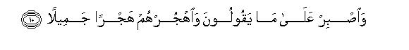
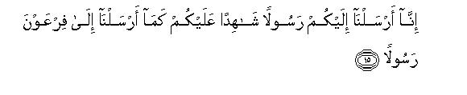
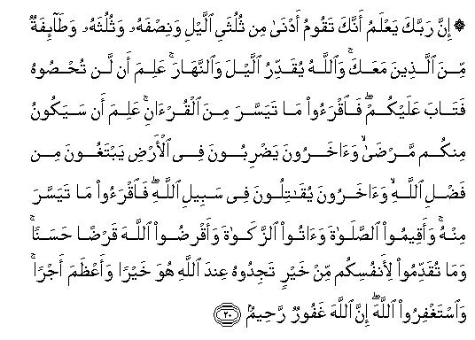

بسم الله الرحمن الرحيم
Sayyid Abul Ala Maududi - Tafhim al-Qur'an - The Meaning of the Qur'an
 73.
Surah Al Muzzammil (The One Who is Covered Up)
73.
Surah Al Muzzammil (The One Who is Covered Up)
The Surah has been so designated after the word al-muzzammil occurring in the very first verse. This is only a name and not a title of its subject matter.
The two sections of this Surah were revealed in two separate periods.
The first section (vv. 1-19) is unanimously a Makki Revelation, and this is supported both by its subject matter and by the traditions of the Hadith. As for the question, in which specific period of the life at Makkah it was revealed, it is not answered by the tradition, but the internal evidence of the subject matter of this section helps to determine the period of its revelation.
First, in it the Holy Prophet (upon whom be peace) has been instructed to the effect: "Arise during the night and worship Allah so that you may develop the capability to shoulder the heavy burden of Prophethood and to discharge its responsibilities." This shows that this Command must have been given in the earliest period of the Prophethood when training was being imparted to the Holy prophet by Allah for this office.
Secondly, a Command has been given in it that the Qur'an be recited in, the Tahajjud Prayer for half the night, or thereabout. This Command by itself points out that by that time at least so much of the Qur'an had been revealed as could be recited for that long.
Thirdly, in this section the Holy Prophet (upon whom be peace) has been exhorted to have patience at the excesses being committed by his opponents, and the disbelievers of Makkah have been threatened with the torment. This shows that this section was revealed at a time when the Holy Prophet (upon whom be peace) had openly started preaching Islam and the opposition to him at Makkah had grown active and strong.
About the second section (v. 20) although many of the commentators have expressed the opinion that this too was sent down at Makkah, yet some other commentators regard it as a Madani Revelation, and this same opinion is confirmed by the subject matter of this section. For it mentions fighting in the way of Allah, and obviously, there could be no question of it at Makkah; it also contains the Command to pay the obligatory zakat, and it is fully confirmed that the zakat at a specific rate and with an exemption limit (nisab) was enjoined at Madinah.
In the first seven verses the Holy Prophet (upon whom be peace) has been commanded to the effect: "Prepare yourself to shoulder the responsibilities of the great Mission that has been entrusted to you; its practical form is that you should rise during the hours of night and stand up in Prayer for half the night, or for a little more or less of it."
In vv. 8-14, he has been exhorted to the effect: "Devote yourself exclusively to that God Who is the Owner of the whole universe. Entrust all your affairs to Him with full satisfaction of the heart. Bear with patience whatever your opponents may utter against you. Do not be intimate with them. Leave their affair to God: He Himself will deal with them."
Then, in vv. 15-19, those of the people of Makkah, who were opposing the Holy Prophet (upon whom be peace) have been warned, so as to say: "We have sent a Messenger to you just as We sent a Messenger to the Pharaoh. Just consider what fate the Pharaoh met when he did not accept the invitation of the Messenger of Allah. Supposing that you are not punished by a torment in this world, how will you save yourselves from the punishment for disbelief on the Day of Resurrection."
This is the subject matter of the first section. The second section, according to a tradition from Hadrat Sa'id bin Jubair, was sent down ten years later, and in it the initial Command given in connection with the Tahajjud Prayer, in the beginning of the first section, was curtailed. The new Command enjoined, "Offer as much of the Tahajjud Prayer as you easily can, but what the Muslims should particularly mind and attend to is the five times obligatory Prayer a day:, they should establish it regularly and punctually; they should discharge their zakat dues accurately; and they should spend their wealth with sincere intentions for the sake of Allah. In conclusion, the Muslims have been exhorted, saying: "Whatever good works you do in the world, will not go waste, but they are like the provision which a traveler sends up in advance to his permanent place of residence. Whatever good you send up from the world, you will find it with Allah, and the provision thus sent up is much better than what you will have to leave behind in the world, and with Allah you will also get a much better and richer reward than what you have actually sent up before."
In the name of Allah, the Compassionate, the Merciful.

[1-14] O you who sleeps covered up,1 keep standing in Prayer at night but a little2 half the night, or lessen it a little, or add to it a little3 and recite the Qur'an calmly in a measured tone.4 Indeed, We are about to send down on you a weighty Word.5 In fact. the rising by night6 is most effective for controlling the self7 and most suitable for reciting the Qur'an well,8 for in the day time you have many an occupations. Remember the name of your Lord9 and devote yourself to Him exclusively. He is the Owner of the East and the West. There is no god but He; therefore, take Him alone as your Guardian.10 And bear with patience what they utter, and depart from them gracefully.11 Leave it to Me to deal with those prosperous people who deny12 (the Truth) and leave them as they are for a while. We have heavy fetters (for them)13 and a blazing Fire, and a choking food and a painful torment. This will happen on the Day when the earth and the mountains shall become as heaps of scattering sand.14

[15-19] To you15 We have sent a Messenger to be a witness over you,16 even as We had sent a Messenger to the Pharaoh. (Then behold when) the Pharaoh disobeyed the Messenger, We seized him with a firm grip. if you too, refuse to believe, then how will you protect yourselves on the Day that will make the children old,17 and whose severity shall cause the heavens to split? Allah's promise has to be fulfilled in any case. This is an Admonition; so, whoever wills, let him take a path to his Lord.

[20] O Prophet,18 your Lord knows that you sometimes stand in the. Prayer nearly two-thirds of the night and sometimes half the night, and sometimes one-third of the night,19 and so does a group of your Companions.20 Allah alone keeps an account of the time of the day and night. He knows that you cannot compute the time precisely; so He has shown kindness to you. Now you may read as much of the Qur'an as you easily can.21 He knows that there will be sick men among you, and some others who travel to seek Allah's bounty22 and yet others who fight in Allah's Way.23 Therefore, read as much of the Qur'an as you may do with ease. Establish the salat and pay the zakat,24 and give to Allah a goodly loan.25 Whatever good you may send forward for yourselves, you shall find it with Allah. That is best and richest in reward.26 Seek forgiveness from Allah: indeed Allah is All-Forgiving, All-Merciful.
1To address the Holy Prophet (upon whom be peace) with these words and then to command him to rise and keep standing in the Prayer at night, shows that at the tune he either lay asleep, or had wrapped himself up in a sheet in order to go to sleep. Here, to address him with "O you who sleeps covered up" instead of with "O Prophet, or O Messenger", is a fine way of address, which by itself gives the meaning: "Gone is the time when you used to enjoy peaceful sleep at will; now you lie under the burden of a great mission, whose demands and duties are different as well as onerous.
2This can have two meanings:
(1) "Pass the night standing up in the Prayer and spend only a little of it in sleep"; and
(2)"there is no demand from you to pass the whole night in the Prayer, but have rest as well and spend a little part of the night in worship too."
But in view of the theme that follows the first meaning seems to be more relevant, and the same is supported by Ad-Dahr: 26, in which it has been said: "Prostrate yourself before Him in the night and glorify Him during the long hours of night."
3This is an explanation of the duration of time commanded to be spent in worship. In it the Holy Prophet (upon whom be peace) was given the option to spend half of the night in the Prayer, or a little less than that, or a little more than that. But the style shows that half the night has been regarded as preferable, for the measure is the same, which may be decreased or increased, as the people may like and choose.
4"Recite the Qur'an ......": Do not recite it quickly and in haste, but slowly and distinctly: pause at every verse so that the mind understands the meaning and purport of Divine Revelation well and takes effect from it. if it contains the mention of Allah's Being and Attributes, it may awe-inspire the heart with His glory and majesty; if it expresses His mercy, the heart may be filled with feelings of gratitude to Him; if it mentions His wrath and His punishment, the heart may be overwhelmed by fear of Him; if it enjoins something or forbids something, one may understand what has been enjoined and what has been forbidden. In short, the recital does not only consist in uttering the words with the tongue, but it should involve thoughtful consideration of the meaning. When Hadrat Anas was asked about the Holy Prophet's method of reciting the Qur'an, he replied: The Holy Messenger stretched the words when reciting them. For example, when he recited Bismillah ir-Rahman it-Rahim he would stretch and prolong the sound of Allah, Rahman and Rahim (Bukhari). When Hadrat Umm Salamah was asked the same question, she replied that the Holy Prophet (upon whom be peace) recited every verse separately and distinctly and observed a pause at the end of every verse. For instance, he recited AI-hamdu-lillah-i Rabb-il'alamin, and paused, then recited ar-Rahman ir-Rahim, and paused, and then recited Malik-i yaum id-di'n. "(Musnad Ahmad, Abu Da'ud, Tirmidhi). In another tradition, Hadrat Umm Salamah has stated that the Holy Prophet recited each word distinctly and clearly. (Tirmidhi, Nasa'i). Hadrat Hudhaifah bin Yaman says: "Once I stood beside the Holy Prophet in the Night Prayer to see how he recited the Qur'an. I noticed that he glorified Allah where He should be glorified, invoked and supplicated Allah where He should be invoked and supplicated, and sought refuge of Allah where His refuge should be sought." (Muslim, Nasa'i). Hadrat Abu Dharr has stated that once during the Night Prayer when the Holy Prophet (upon whom be peace) came to the sentence: In to adhdhib-hmn ... (If You punish them, then they are Your servants; and if You forgive them, then You are Almighty, All-Wise), he went on repeating it over and over again until it became dawn." (Musnad Ahmad, Bukhari).
5That is, "You are being commanded to stand up in the Night Prayer because We are going to send down on you a weighty word, to bear the burden of which you must develop necessary power in yourself, and you can develop this power only by abandoning your ease and comfort of the night and by standing up in the Prayer and passing half the night or thereabout in the worship of your Lord. "The Qur'an has been called a weighty Word also for the reason that acting on its commands, demonstrating its teaching practically, extending its invitation in the face of the whole world, and bringing about a revolution in the entire system of belief and thought, morals and manners, civilization and social life, according to it, is indeed the weightiest task any human being ever has been charged with: It has been called a weighty Word also because bearing the burden of its revelation was a difficult and heavy duty. Hadrat Zaid bin Thabit says: "Once Revelation came down upon the Holy Prophet (upon whom be peace) in a state when he was resting his head upon my knee. I felt such a pressure of the weight on my knee that I thought it would break." Hadrat `A`ishah says: "I have seen the state of the Holy Prophet's receiving Revelation during intense cold, drops of perspiration started falling from his forehead." (Bukhari, Muslim, Malik, Tirmidhi, Nasa'i): In another tradition Hadrat `A`ishah has stated: "Whenever Revelation came down on the Holy Prophet (upon whom be peace) while he was riding on his she-camel, the she-camel would be forced to rest her chest on the ground and could not move until the Revelation was over." (Musnad Ahmad. Hakim, Ibn Jarir).
6About the meaning of the word nashi'at al-lail, as used in the original, the commentators and lexicographers have expressed four different viewpoints:
(1) That nashi'at implies the person himself who rises at night;
(2) that it implies the hours of night;
(3) that it means the rising by night; and
(4) that it does not only apply to the rising in the night but rising after having had some sleep,
Hadrat `A`ishah and Mujahid have adopted this fourth viewpoint.
7The word ashaddu wat'an as used in the Text is so vast in meaning that it cannot be explained in any one sentence. Its one meaning is: As the rising for worship by night and standing up for a long tithe in the Prayer is against human nature and the self of man seeks ease and comfort at that time. this act is an exercise which is most effective in controlling and disciplining the self. The person who governs himself by this method and gains dominance over his body and mind becomes able to use his power in the way of God, can work more efficiently and firmly to make the message of true Faith prevail in the world. The second meaning is: This is a very effective means of producing harmony and concord between the heart and the tongue, for during these hours of the night none else intervenes between the servant and his God, and whatever man utters with his tongue in this state, is the very voice of his heart. The third meaning is: This is a very efficacious means of bringing about conformity between the exterior and the interior of man, , for the person who in the solitude of the night would abandon his comfort and ease and arise for worship, would do so only out of sincerity: there can be no tinge of display and hypocrisy in this. The fourth meaning is: As this worship is harder on man than the worship of the daytime, it develops steadfastness in him: he is enabled to walk in the path of God more firmly and can face and endure the hardships of that way with greater constancy and determination.
8Literally: "Makes the speech most upright and sound." But the purport is to say that at that time man can read the Qur'an with greater peace of mind, attention and understanding. lbn `Abbas has explained it thus: "That it is the most suitable time for man to ponder over the Qur'an well.” (Abu Da'ud).
9After making mention of the occupation of the daytime, the exhortation to "remember the name of your Lord" by itself gives the meaning: "Never be heedless of the remembrance of your Lord even when you are deeply involved in your worldly occupations, and continue. to commemorate His name in one way or another at all times." (For explanation, see E.N. 63 of Surah AI-Ahzab).
10" Wakil is a person in whom one has complete faith; so much so that one can entrust all one's affairs to him with full satisfaction of the heart. Thus, the verse means: "Do not feel distressed at the hardships that you are experiencing at the storm of opposition that has been provoked by your invitation to we Faith. Your Lord is He Who is the Owner of the East and the West, (i.e. of the whole universe) besides Whom no one else possesses the powers of Godhead. Entrust your affair to Him and be satisfied that He will fight your case, He will deal with your opponents, and He will look after all your interests well. "
11"Depart from them" does not mean "Break off all ties with them and stop preaching to them", but it means; "Do not have intimate and friendly relations with them: disregard their foolish behavior and their nonsense." However, you should do so without showing any grief, anger or temper but gracefully like a noble person, who would disregard the abusive remarks of a mean person without minding them at all. This should not create the misunderstanding that the Holy Prophet's conduct was any different from it; therefore, Allah gave him this instruction. As a matter of fact, the Holy Prophet (upon whom be peace) was already following this very mode of conduct; this instruction was given in the Qur'an so as to tell the disbelievers: "It is not due to any weakness on the part of the Prophet that he is not responding to what you are saying against him, but Allah Himself has taught His Messenger to adopt this noble way of conduct in response to your foolish behavior. "
12These words clearly contain the sense that the people who were actually denying the Holy Prophet (upon whom be peace) in Makkah and were inciting the common people to oppose and resist him by stirring up prejudices and by deceit and fraud were the well-to-do, prosperous and affluent people, for it was their interests, which were being hit by Islam's message of reform. The Qur'an tells us that this was not peculiar only to the Holy Prophet's case but in every age this very class of the people have been the main obstacle to every movement of reform. For example, see Al-A`raf; 60, 6b, 75, 88; Al-Mu'minun: 33; Saba; 34 35; Az-Zukhruf: 23.
13Heavy fetters in Hell will not be put on the criminals' feet to stop them from escape but in order that they are not able to stand up and move; these will not be used to prevent their escape but as an instrument of their torment.
14Since at that time the cohesive force to bind the parts of the mountains together will cease to work, first they will become like crumbling dunes of fine sand, then because of the earthquake which will be shaking the earth; the sand will scatter and shift and the whole earth will turn into an empty level plain. This last state has been described in Ta Ha: 105-107, thus: "They ask you: where will the mountains go on that Day? Say: My Lord will reduce them to fine dust and scatter it away. He will turn the earth into an empty level plain, wherein you will neither see any curve no crease."
15The address now turns to the disbelievers of Makkah, who were denying the Holy Prophet (upon whom be peace) and persecuting him relentlessly.
16Sending the Holy Prophet to be a witness over the people also means that he should testify to the Truth by his word and deed before them in the world and also that in the Hereafter when Allah's Court is established, he will testify that he had presented the whole Truth before the people in the world. (For further explanation, see E.N. 144 of Al-Baqarah, E.N. 64 of An-Nisa', An-Nahl: 84, 89, E.N. 82 of Al-Azab, E.N. 14 of Al-Fath).
17That is, "In the first place, you should be afraid that if you do not accept the invitation of the Messenger sent by Us, you will have to meet the same evil end in this world, which the Pharaoh has already met in consequence of this very crime. But even if no torment is sent on you in the world, how will you save yourselves from the punishment of the Day of Resurrection?"
18About this verse in which reduction has been made in the injunction concerning the Tahajjud Prayer, there are different traditions. Musnad Ahmad, Muslim and Abu Da'ud have related a tradition, on the authority of Hadrat `A'ishah, saying that this second command was sent down one year after the first command, and the standing up in the Prayer at night was made voluntary instead of obligatory. Another tradition which Ibn Jarir and Ibn Abi Hatim have related, again on the authority of Hadrat `A'ishah, says that this command came down 8 months after the first command, and a third tradition which Ibn Abi Hatim has related again from her, says that it came down 16 months later. Abu Da'ud, Ibn Jarir and Ibn Abi Hatim have cited the period of one year from Hadrat `Abdullah bin 'Abbas. But Hadrat Sa'id bin Jubair has stated that it was sent down ten years later. (Ibn Jarir, Ibn Abi Hatim). In our opinion this last view is most sound, for the subject-matter of the first section clearly shows that it was sent down in Makkah and that too in the earliest stage when at the most four years might have passed since the advent of Prophethood. Contrary to this, this second section, .in view of the express evidence of its subject matter, seems to have been revealed at Madinah when fighting had started with the disbelievers and the zakat also had been enjoined as an obligatory duty. On this basis inevitably the two sections should have been sent down at an interval of at least ten years between them.
19Although the initial command to the Holy Prophet was to keep standing up in the Prayer for half the. night, or thereabout, it was difficult to compute the time precisely in the absorption of the Prayer, especially when there were no watches either to measure time accurately; therefore, sometimes two thirds of the night passed in the prayer and sometimes only one-third of it.
20In the initial command only the Holy Prophet (upon whom be peace) was addressed and only he was instructed to stand up in the Prayer by night. But since the Muslims at that time were ardently desirous of following him in everything he did and of earning more and more good and virtues, many of the Companions also performed this Night Prayer regularly.
21As the Prayer is prolonged due mainly to a lengthy recital of the Qur'an, it is said: "You may recite as much of the Qur'an as you easily can in the Tahajjud Prayer This would automatically cause the Prayer to be shortened" . Although the words here are apparently in the imperative mood, it is agreed by all that Tahajjud is not an obligatory but a voluntary Prayer. In the Hadith also it has been explained that on an inquiry by a person the Holy Prophet (upon whom be peace) replied: "Five times Prayer in the day and night is obligatory on you. He asked: Is anything besides this also binding on me? The Holy Prophet said: No, unless you may like to offer something of your own accord. " (Bukhari, Muslim).
This verse also shows another thing. Just as the bowing (ruku ) and prostration (sajdah.) are obligatory in the Prayer, so is the recital of the Qur'an. For just as Allah at other places has used the words ruku' and sajdah for the prayer, so here He has mentioned recital of the Qur'an, which implies its recital in the Prayer. If somebody objects to this conclusion, saying: When the Tahajjud Prayer itself is voluntary, how can recital of the Qur'an in it be obligatory? The answer is: Even in case of the voluntary Prayer it is incumbent on one to fulfil all the pre-requisites of the Prayer and to perform all its basic elements and obligatory parts. No one can say that in case of the voluntary Prayer, purity of the garments and body, ablutions and concealment of the satar (minimal part of the body to be covered) are not obligatory, and the standing up and sitting and performance of ruku`and sajdah also in it are only voluntary.
22Traveling to earn one's living by lawful and permissible methods has been described in many places in the Qur'an as the seeking of Allah's bounty.
23Here, the way Allah has made mention of seeking pure livelihood and fighting in the Way of Allah together and declared these two, besides the compulsion on account of illness, as reasons for exemption from the Tahajjud Prayer, or concession in it, shows how meritorious it is in Islam-to earn one's livelihood by lawful methods. In the Hadith, Hadrat `Abdullah bin Mas`ud has reported that the Holy Prophet (upon whom be peace) said: "The person who came to a city of the Muslims with food grains and sold it at the rate of the day, will attain to a place nearest to Allah, and then the Holy Prophet recited this very verse." (lbn Marduyah), Hadrat 'Umar once said: "Except for fighting in the way of Allah, the state in which I would love to be overtaken by death, is the state when I am overtaken by it while passing through a mountain pass in search of livelihood and then he recited this very verse." (Baihaqi, Shu ab al-Iman).
24Commentators are agreed that this implies observance of the obligatory Prayer five times a day and giving away of the obligatory zakat.
25Ibn Zaid says this implies spending one's wealth in the cause of Allah besides the zakat, whether it is in the cause of fighting in the way of Allah, or for helping the needy, or for public utilities, or other good works. The meaning of giving to Allah a good loan has been explained at several places above. See E.N 267 of AI-Baqarah, E.N. 33 of Al-Ma'idah, E.N. 16 of Al-Hadid).
26It means: "Whatever you have sent forward for the good of your Hereafter is more beneficial for you than that you withheld in the world and did not spend in any good cause for the pleasure of Allah. According to a Hadith reported by Hadrat 'Abdullah bin Mas`ud the Holy Prophet (upon whom be peace) once asked: "Which of you has a greater love for his own wealth than for the wealth of his heir? The people said: There is none among us, O Messenger of Allah, who would not have greater love for his own wealth than for the wealth of his heir. He said: Consider well what you are saying. The people submitted: This indeed is our considered opinion, O Messenger of Allah. Thereupon the Holy Prophet said: Your own property is only that which you have sent forward (for the good f your Hereafter), and whatever you held back indeed belongs to the heir." (Bukhari. Nasa'i, Musnad Abu Ya`la).